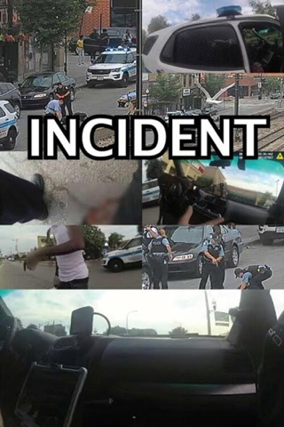

About the film
Chicago, 2018. A man is killed by police on the street. Through a composite montage of images from surveillance and security footage as well as police body-cams, INCIDENT recreates the event and its consequences, featuring vain justifications, altercations and attempts to avoid blame. Bill Morrison delivers a chilling political investigation in search of the truth.
At the festival
- 2023 Shortcuts Program 2 · Shortcuts Program 2 · Saturday, November 4, 2023 · 11:00 AM · Martin Luther King, Jr. Memorial Library
Sessions about this film
- 2023 · Fri Nov 3 · 12:00 PMScreening eventShortcuts Program 1
More films on these topics
 The Black SwanMads Brügger2025 · 90 min
The Black SwanMads Brügger2025 · 90 min The Accidental SpyAnthony Wonke2024 · 98 min
The Accidental SpyAnthony Wonke2024 · 98 min Phantom ParrotKate Stonehill2023 · 82 min
Phantom ParrotKate Stonehill2023 · 82 min American PainDarren Foster2022 · 106 min
American PainDarren Foster2022 · 106 min The Pegasus projectLaurence Topham2021 · 4 min
The Pegasus projectLaurence Topham2021 · 4 min- United States vs. Reality WinnerOPENING NIGHT: United States vs. Reality Winner2021 · 94 min